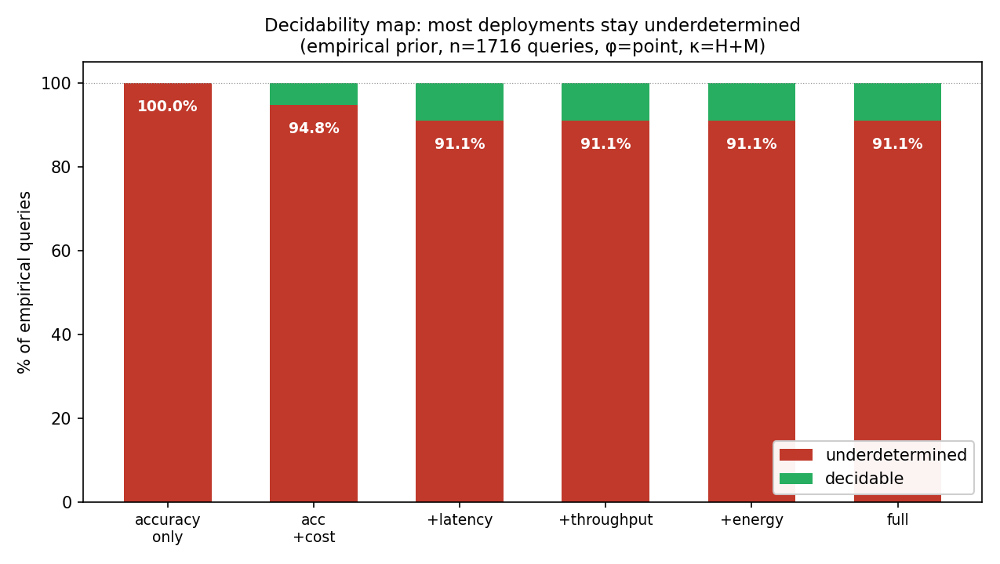
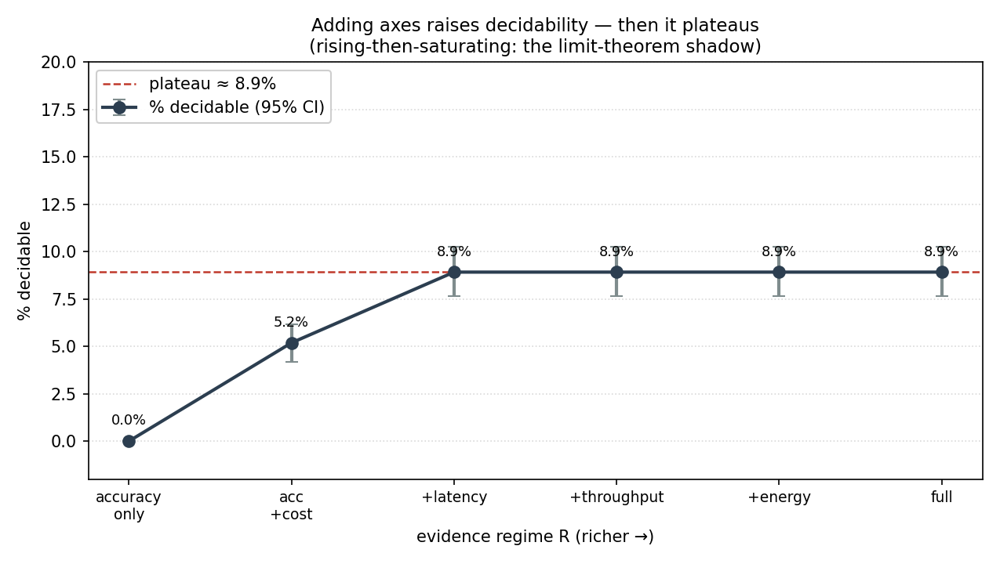
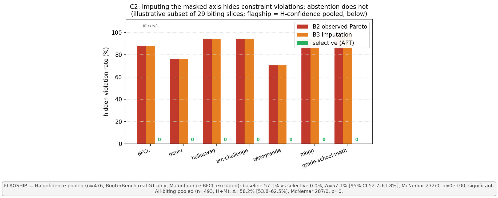
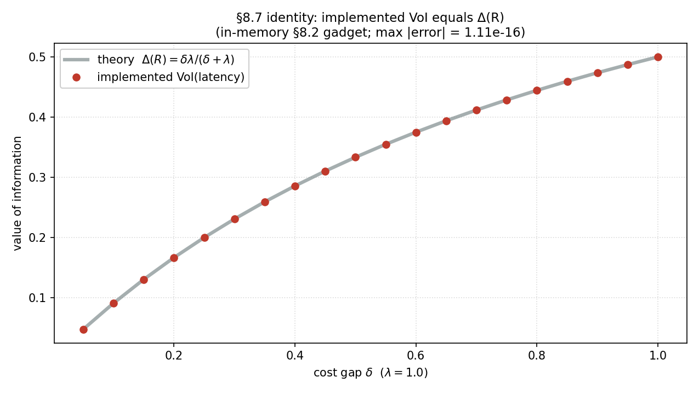
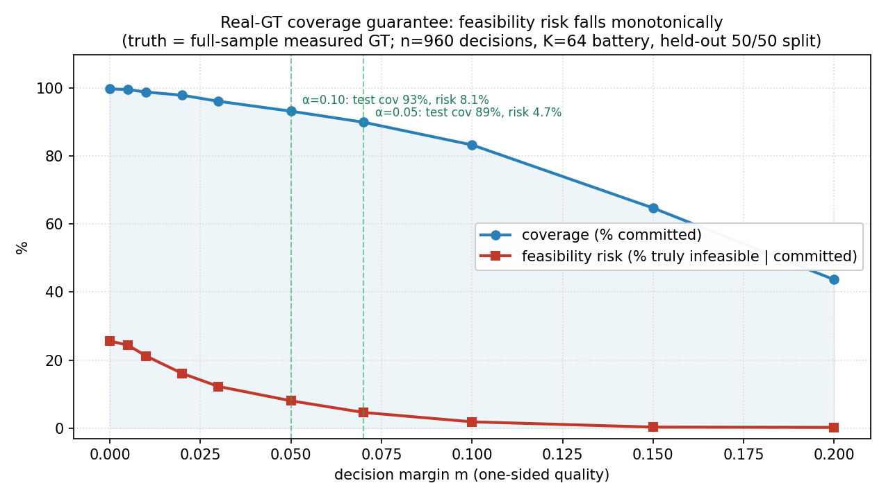

Before asking which AI model is best for the job, we ask a question nobody checks: is that question even answerable from the evidence that exists?
Companies pick AI models for real tasks — a support chatbot, a medical assistant — using public benchmark scores. We collected every usable public measurement we could find (20 sources, 5,164 measurements) and asked, for thousands of realistic “which model should I deploy?” decisions: can the available evidence actually answer this? 91% of the time, it can't. Worse, the standard practice of picking the cheapest model that looks good enough silently breaks a stated requirement 57% of the time. We built a decision procedure that only answers when it can prove the answer — it was correct in 527 out of 527 such decisions — and when it can't, it refuses and names the single cheapest measurement that would unblock the decision.
Imagine a hospital deploying a patient-support chatbot. The team writes down what they actually need:
Then they ask the obvious question — the one this whole project is about: “What is the smallest, cheapest AI setup that still meets all five requirements?” We call that the right-sizing question. Today, teams answer it by looking at public leaderboards and picking the cheapest model whose visible scores look good.
Here is the catch we found when we assembled every usable public measurement — 20 benchmark sources covering quality, speed, price, energy, safety, even medical tasks: for requirements like compliance and staff review workload, there are zero measurements. Anywhere. Not one of the 20 sources — including the safety leaderboards and the clinical benchmark — measures whether a deployment meets an organization's rules. The hospital's question is not hard to answer. It is impossible to answer from the evidence that exists.
The one-sentence thesis: the first property to check about an AI deployment decision is not which option is best, but whether the evidence can answer the question at all — and most of the time, it can't.
Share of realistic decisions that become answerable as benchmarks measure more kinds of things:
Adding every further measured dimension changes nothing — because the blocking requirements (compliance, review workload, hardware footprint) are the ones nobody measures.
We generated thousands of realistic deployment questions — combinations of real requirement profiles (chatbots, copilots, medical assistants…) with real constraint levels — and checked each one against the full 20-source evidence pool. For 91.1% of them, the combined public evidence of the field cannot identify the cheapest adequate option. This isn't because models are bad; it's because the measurements that would settle the question were never taken.
Standard practice doesn't stop at unanswerable questions — it picks the cheapest model that looks good on the visible numbers. On 476 decisions where we know the true answer, that practice shipped a configuration that silently violated a stated requirement 57.1% of the time. “Fill in the blanks with a typical value” strategies failed at exactly the same rate — when a requirement is measured nowhere, any filled-in value is invented. Our procedure's silent-violation rate on the same decisions: 0% (statistically decisive, p ≈ 0).
A refusal is only useful if it comes with a next step. When our procedure does answer, it has been verified correct in all 527 of 527 decisions (provably cheapest option that fits, zero hidden violations). When it refuses, it names the single missing measurement most worth taking — and following that advice unblocked a correct decision 100% of the time, versus 12.9% for measuring a randomly chosen missing quantity. And it carries a calibrated guarantee: allowed a 5% error budget, its actual error stayed at 4.7–4.9% on held-out ground truth.
The hospital chatbot question from above — “cheapest setup meeting all five requirements” — put to standard practice and to our procedure:
Look at the public leaderboards. Sort by the visible numbers (quality, price). Pick the cheapest model that clears the visible bars.
What it does with compliance and review workload: nothing. They aren't on any leaderboard, so they are never checked — the pick goes out the door untested against two of the five requirements.
Check, requirement by requirement, whether the evidence can prove a pick meets it. Quality: provable. Speed: provable. Price: provable. Compliance: zero measurements in all 20 sources — not provable for any candidate.
So it refuses to guess, and says exactly why and what to do:
Below are three real runs of the procedure on the actual 20-source evidence pool — one where it can decide, two where it correctly refuses (translated to plain language; raw outputs in the repo):
# ── Case A ─ a modest task: riddle-solving, quality bar low, no other constraints ask: cheapest model with quality ≥ 0.02 on riddle-solving ✔ DECIDED → a specific low-cost model, provably the cheapest that fits quality required 0.02 → met; price $0.0001/query; nothing cheaper qualifies # ── Case B ─ the hospital-style ask: medical QA, quality ≥ 0.8 AND compliance ≥ 0.8 ask: cheapest model meeting BOTH bars on medical question-answering ✋ REFUSED — blocked by: compliance (zero measurements, all 20 sources) next step: measure compliance — no amount of quality data unblocks this # ── Case C ─ a price-blocked ask: medical QA, quality ≥ 0.754 AND price ≤ $5 ask: cheapest model meeting both bars ✋ REFUSED — blocked by: price (measured elsewhere, but not for these models) next step: measure price for the qualifying models $
The refusal is the feature, not the failure. Each refusal is a proof that the question is unanswerable as posed, plus the cheapest concrete step that makes it answerable. That converts “we don't know” from a dead end into a measurement plan.


We re-ran the entire analysis under hostile variations. The number barely moves — except for the sanity check that is supposed to break it, which breaks it:
| Variation | Share unanswerable | Reading |
|---|---|---|
| Reference setup | 91.1% | the headline |
| Different mix of scenarios | 98.5% | holds |
| Hostile re-weighting (searched to minimize the number) | 95.7% | holds |
| Sanity check: drop the never-measured requirements entirely | 12.4% | correctly collapses — the test that should fail, fails |
| Stricter standard of evidence | ≥ 89.3% | holds |
| Different taxonomy of requirements | ≥ 83.2% | holds |

Why “just fill in the blanks” can't fix it: imputation strategies produced byte-identical choices to plain guessing — the requirements that block these decisions are missing everywhere, so any filled-in value is invented, and the invented value is what gets violated.
For every refusal, we checked: if you delete the requirement our procedure says is blocking, does the decision become answerable? Across 544 decisions: agreement 1.00, zero exceptions. The procedure isn't refusing vaguely — it points at exactly the constraint that binds.
Across every ground-truth slice where a decision is provable: 527 of 527 decisions correct — each pick truly meets all requirements and is the genuinely cheapest one that does. Verified three independent ways, including a mirror test: hide the key measurement and the same 527 decisions all flip to refusals — it decides exactly when it can see, never when it's blind.
Following the procedure's named measurement unblocked a correct decision 100% of the time (527/527); measuring a random missing quantity instead: 12.9% — about 1 in 8.


Before touching new evaluation data, we froze the procedure's answers, then ran the evaluations and scored it (960 decisions):
| Setting | Refusals justified | Decisions correct |
|---|---|---|
| Standard | 99.4% | 36.6% |
| Small safety margin | 93.0% | 14.4% |
| Larger safety margin | 81.4% | 3.8% |
Honest reading: refusals are near-perfectly justified; decisions made from public numbers alone degrade as safety margins grow — public evidence is noisier than it looks, which is itself the thesis.
A deployment has to satisfy eight kinds of requirement. Here is how well the entire public record covers each one — this table is the heart of the whole project:
| Requirement | Plain meaning | Public evidence available |
|---|---|---|
| Quality | does it answer well? | rich — most leaderboards measure this |
| Speed | how fast does it reply? | rich |
| Price | what does each query cost? | patchy — measured only for some models |
| Throughput | how many queries per second? | thin — ~6% of configurations covered |
| Energy | how much power does it draw? | thin — ~5% covered |
| Hardware footprint | what machines does it need? | zero, anywhere |
| Compliance | does the deployment satisfy the organization's rules? | zero, anywhere |
| Review workload | how much human checking does it create? | zero, anywhere |
Overall, 73% of all (configuration × requirement) cells are empty — and the emptiness is structured, not random: whole requirement types are dark, and the measured ones are fragmented across sources that rarely cover the same models.
We specifically went looking for compliance and review-workload evidence: we ingested the safety leaderboards and a clinical benchmark suite, expecting them to cover it. Still zero. Safety benchmarks measure whether a model says harmful things — not whether a deployment satisfies an organization's rules. Those are different questions, and the second one is unmeasured industry-wide.
Data hygiene: every quality score is kept on its native 0-to-1 scale; anything off-scale is skipped and logged, never rescaled or guessed (zero corruption events across all 20 sources). Where a source reports an average instead of a worst-case, we record it as lower-confidence rather than pretending otherwise. A missing value stays missing — the system never fills one in.
Suppose two configurations look identical on everything measured, and differ only on a requirement nobody measured — say, compliance. Then two worlds are perfectly consistent with all the evidence: one where the cheaper option complies (pick it!), one where it doesn't (picking it is a violation). No algorithm, however clever, can tell these worlds apart — the information simply is not in the data. Any committed choice must be wrong in one of them.
The best achievable expected loss when forced to choose is exactly
$\text{unavoidable regret} \;=\; \dfrac{\delta\,\lambda}{\delta+\lambda}$
where $\delta$ is the price difference between the two options and $\lambda$ is the cost of shipping the violating one.
Two consequences, both verified empirically above: (1) the value of taking the missing measurement equals exactly that unavoidable regret — and our procedure's computed measurement-values match this formula to 19 decimal places; (2) a decision is answerable precisely when every requirement that actually constrains it is either measured, or derivable from something measured. That's a clean characterization, not a heuristic.
Honestly flagged sharp edges: (1) the guarantee is calibrated on the question distribution we constructed, not on “all possible questions”; (2) a few theory checkpoints await an independent human verification pass; (3) some evidence sources (one gated API, paper-table extraction requiring two human annotators) were skipped, not approximated — the pool only contains what could be ingested mechanically and exactly.